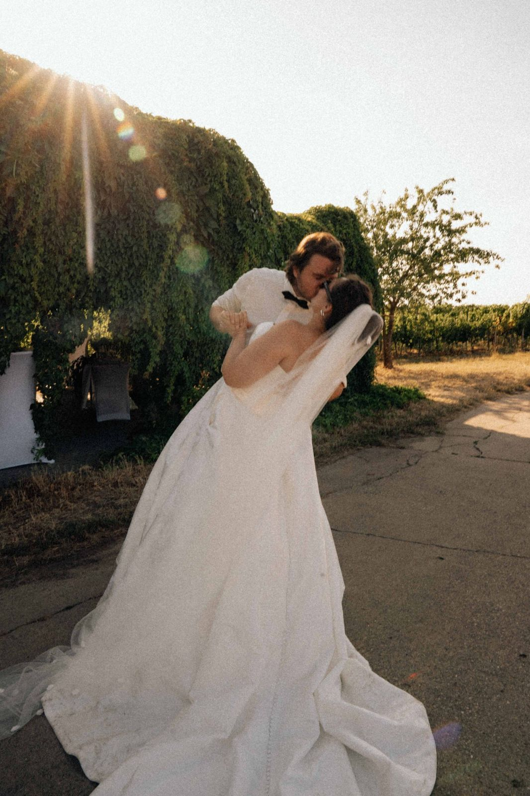
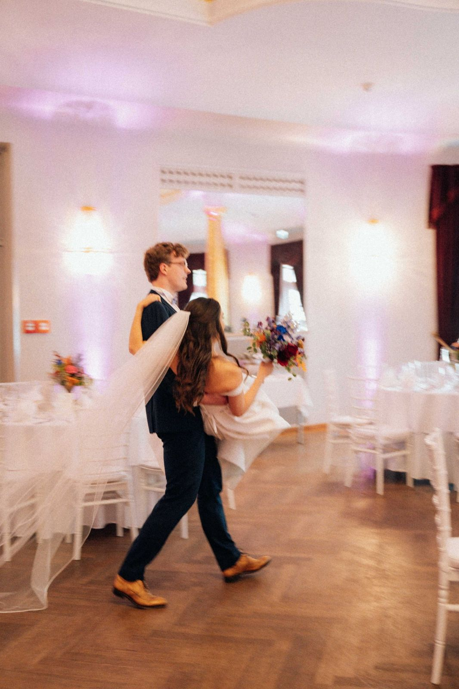
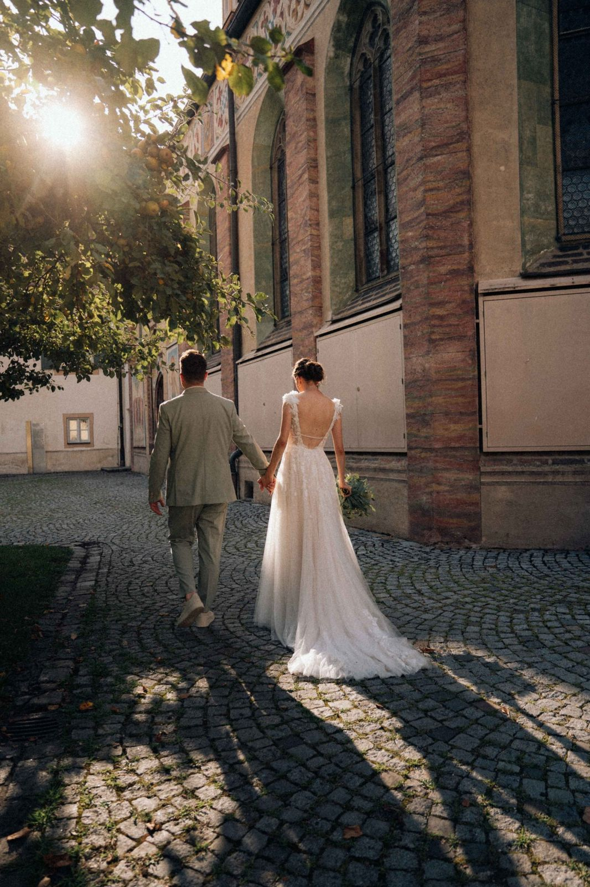
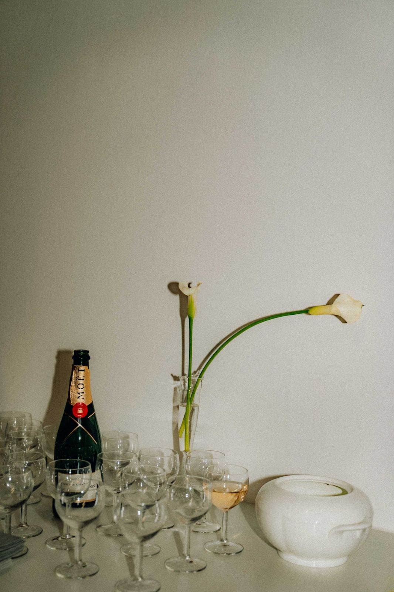
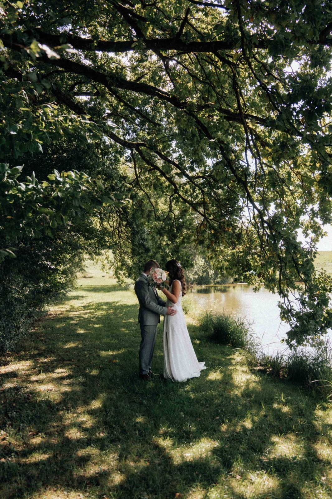

Hochzeiten — neun ausgewählte Geschichten









Familien, Babybauch und Newborn
Ein Babybauch, eine Wiese, eine kleine Schwester in spe
Eine Stunde vor Sonnenuntergang, mitten in den Kornblumen. Solche Bilder entstehen, wenn niemand posiert.
Fotos, die euch auch in 20 Jahren noch bewegen 🤍
Termin anfragenBusiness, Portraits und Personal Branding
Schauspielportraits, Michael Kranz
Elf Gesichter an einem Nachmittag. Für die Kartei braucht es Bandbreite — und jemanden, der beim Wechsel zwischen den Rollen nicht drängt.
Fotos, die nach euch aussehen 🤍
Termin anfragen